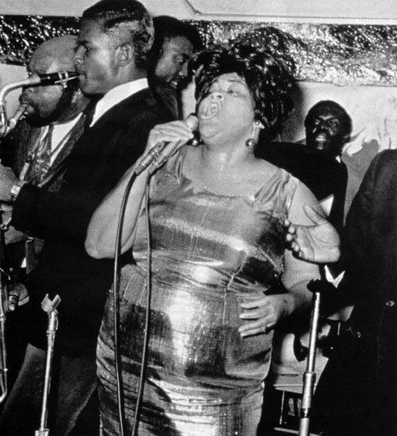
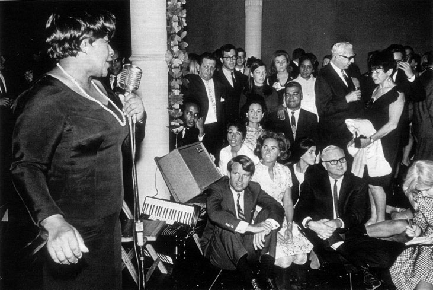
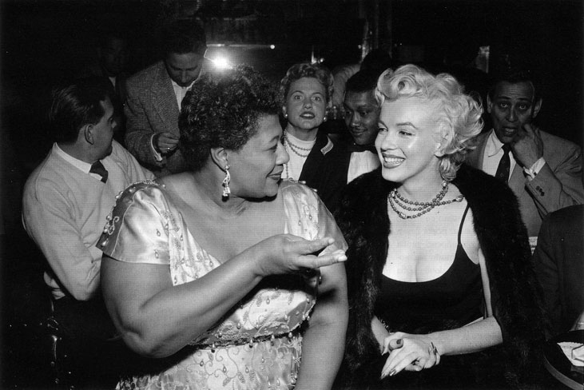
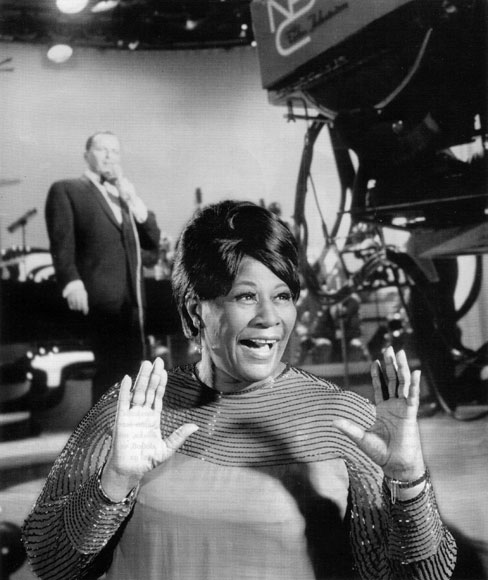
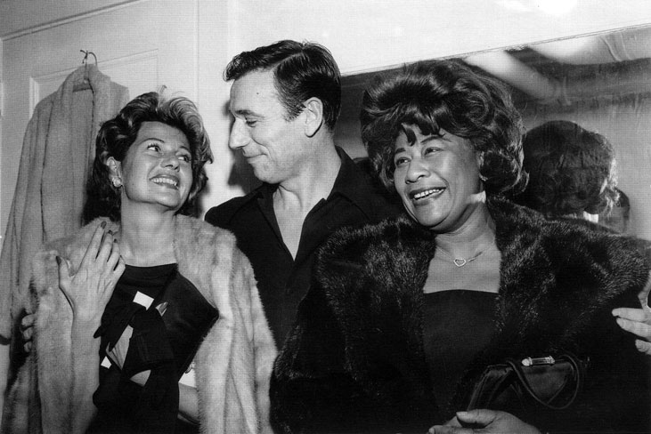
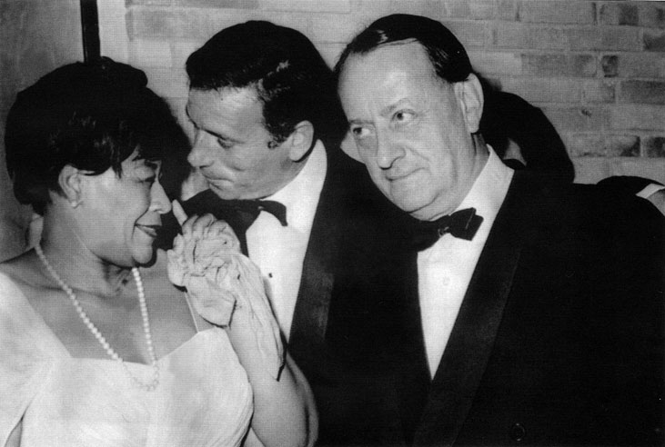
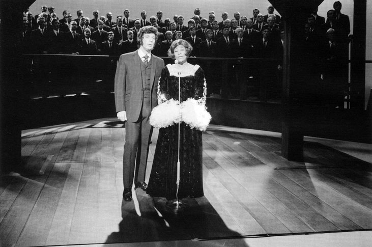

Ела Фицджералд
Ела Фицджералд
В деня, в който художникьт Густав Климт започва работа по една от последните си картини - Адам и Ева. В деня, в който Томас Ман написва първото изречението на романа Вълшебната паанина. В деня, в който Владимир Илич Ленин оповестява необходимостта от реболюция в Русия, край едно ново пристанище в градчето Нюпорт Нюз, щата Вирджиния, на самия кей насред жестоки болки и напълно сама Темперансе Фицджералд ражда първата си дъщеря. След години Темперансе разказва: „Ако можех, тогава щях да отнема живота й, за да не страда. Щях просто да пусна окървавеното й тяло във водата и край. Но не дръзнах. Вярвах, че тя няма да има моята участ - сама, с родилни болки на кея." Същата Вечер на 25 април 1917 местен рибар дочува виковете на новороденото. Трудно открива откьде идва плачът. Тъмно е. Темперансе е от хилядите африканци, заселили се по тези места в края на XIX век. Рибарят най-сетне ги открива, помага на младата негърка и новороденото. Тази странна история за началото на един човешки живот е историята на първата дама на джаза Ела Фицджералд, жената, която вместо молитва шепти: „О, когато ми омръзне тук, аз ще отида там горе и ще пея напук, макар задушена от горест." След първите часове на неясно бъдеще - дали ще живее или не, за Ела следват още по-объркани години. Тя израства в негърския квартал в Нюпорт Нюз на Madison Avenue 2050. Баща й Уилям Фицджералд я изоставя едва когато е на три месеца, затова след години в разговор с Луи Армстронг Ела ще каже: „Днес вярвам, че съм зачената от Луната."

Ела Фицджералд, 1965
Въпреки несполучливия брак майката Темперансе успява да събере сили и да потърси друга опора в живота. Открива я в лицето на Джоузеф да Силва - висок, кокалест, смачкан от суровия живот португалски емигрант. Готов на всичко, за да се изтръгне от лапите на мизерното съществуване. Да Силва и Темперансе се преселват на Clinton Street 27 в Йънкърс, щата Ню Йорк. Джо успява да си намери работа като общ работник на строителен обект през деня, а вечер се превръща в шофьор на такси. Темперансе започва да работи в обществена пералня. Малката Ела израства на улицата с децата от квартала: „Ровех се в калта, а мама вечер ме изкъпваше и казваше: От утре не искам да говориш, ти ще си моето прасенце и само ще грухтиш. Такава беше мама, веселячка въпреки несгодите." През 1923 в семейството на Ела се появява нов член, ражда се сестричката й Франсис. Това поставя Темперансе и Джоузеф пред ново финансово изпитание. Малката 7-годишна Ела търси дребни ангажименти, които да й донесат някакви пари. "Успях да си спечеля място в седмичните спортни игри. Участвах в детските надбягвания с кал. Трябваше да се пробягат определени метри в калта. Хората идваха, оглеждаха ни, а после залагаха. Този, който беше получил най-много залози, печелеше най-много. Тичах, но никога не мислех за победата и винаги успявах да занеса по някой долар в къщи. Просто бях мъжкарана. Играех бейзбол, с което също се припечелваше по нещо." Изработеното Ела никога не крие.

Робърт Кенеди със съпругата си Етел Кенеди на пода наблюдават Ела Фицджералд в Shakespearean Theater, Ню Йорк, 30 октомври 1967
Тя го оставя на масата вкьщи. Наградата винаги е една и съща: позволение да хване влака и да отиде до театър Аполо. Там Ела се запознава с първата си голяма любов - танците. През есента на 1924 Ела е записана на училище, но то не е любимото й място. „Винаги закъсняваше, а ако успееше да съчини някоя лъжа изобщо не идваше, но не я виняхме, защото извикваше у нас умиление. Беше тънка като железопътна релса - казва първият й учител Атанасио. Тя предпочитала заниманията в църковния хор пред задачите по математика. Детството на малката Ела Фицджералд е мечтано за мнозина чернокожи от бедните квартали, но не за дълго. На 17 февруари 1932 в 23 часа и 15 минути в дома на семейство Фицджералд нахлуват двама лекари от местната градска болница. Малката Франсис и Ела спят в съседната стая. Дзкоузеф крачи нервно около медицинските служители. Тялото на Темперансе е на земята и се гърчи по необясними причини. Докторите вадят апаратурата си, за да проверят основните показатели - кръвно налягане и пулс. Тридесет и една годишната Темперансе се задушава. Лекарите са категорични - сърдечен инфаркт. Откарват я в болницата. Но тялото на Темперансе се предава. Час на смъртта: 23 часа и 48 минути. Джоузеф прекарва нощта в близкия параклис. „Оплаквах себе си и двете ни деца, проливането на сълзи по нея тогава беше безсмислено" - споделя той пред Вирджиния, лелята на Ела. Смъртта на майката поражда неочакван емоционален срив у четиринадесетгодишната Ела. Тя започва системно да отсъства от училище и да не се прибира с дни у дома. Често я откриват в различни нощни заведения в компанията на възрастни мъже.

След скорошното си излизане от болница Мерилин Монро е в Tiffany Club с Ела Фицджералд. Холивуд, 19 ноември 1954
„Това беше невероятна загуба за мен, не можех да се контролирам. Вървях и непрекъснато плачех, докато дойде моментът, в който не можех и сълза да отроня повече. Затворих се в себе си. Единствените неща, които ме спасяваха, бяха музиката и бляськът на нощния живот" - разказва Ела. След като загубва пълен контрол над доведената си дъщеря, Джоузеф се обръща за помощ към сестрата на Темперансе. „От смъртта на мама вече беше изминала една година. Всичко в мен беше опустошено. Леля ме измъкна от този ад, поне така си мислех тогава." Но това е само прелюдия към същинския кошмар в живота на Ела. Останала да живее при леля си, невръстната бъдеща звезда на джаза прави всичко възможно да не обременява финансово новата си попечителка и започва да си търси работа. Тъкмо тогава я настига новината за смъртта на полубаща й Джоузеф. Малката сестричка Франсис, която е останала да живее при него, се налага да се премести също при леля Вирджиния. „Трябваше да понеса смъртта на двамата си родители твърде рано. Това ме направи уязвима. Приех първата ми предложена работа. Станах танцъорка в един от нощните бардаци на Харлем. Когато споделих с леля, тя просто ми каза: Майка ти е трябвало да те хвърли наистина във водата. И ми разказа цялата история около моето раждане. Не зная защо, но това ми даде сили да се боря." Така Ела на петнадесет години се оказва на сцената. И ползва големите възможности на възпитаното си тяло, за да изкарва прехраната си. Всяка вечер има жестоки скандали относно това Ела да проституира. Клиентите настояват. Често разпрата приключва едва когато се намеси полиция. Вечерта на 19 юли 1933 скандалът не може да бъде овладян. Мъж на средна възраст придърпва Ела и я моли да го придружи. „Не господине, не ме бъркайте с момичетата за всичко. Аз не танцувам по стаите, аз танцувам единствено на сцената" -отказва Ела. Тогава той се опитва да я насили, а Ела просто хваща чаша от бара, удря го по главата и изчезва в гримьорната. Удареният извиква полиция и показва стореното с думите: „Тази малка кучка ми разби главата. Ако не я приберете днес, ще го направите утре, но утре ще се наложи да носите и ковчег." Полицаите прибират момичето. Отвеждат я в поправителен дом. В дома за сираци Ривърдейл.

Ела, 1970
Животът там се оказва още по-непоносим. По думите на Ела Фицджералд следват „три месеца ежедневен побой и физически гаври", които доразрушават нервната й система. През ноември Ела успява да заблуди охраната на поправителния дом и избягва. Зимата изкарва бездомна, в „другарски" срещи с клошари, далеч по-приятни от всички онези, които е имала през последните три години. С настъпването на пролетта тя се прибира в дома на леля си, където малката й сестричка е станала вече на 11 години. От този момент нататък като че ли животът на Ела се преобръща: „Бог явно видя, че е невъзможно да ме прекърши, и реши да ме помилва - да ми позволи да мечтая, да видя колко високо е Луната." Лелята успява да й намери работа като кабаретна певица. В кабарето Ела взема доста по-малко пари, но пък няма никакви разправии. Ела Фицджералд все още продължава да се съмнява дали изобщо става за пебица: „Мислех единствено за танците, струваше ми се, че това е моята стихия." Хората не харесват изпълненията й в кабарето, но не защото не може да пее, а просто защото никой не разбира това, което пее. През 1934 в града се провежда фестивал на любители музиканти. Ела събира трудно необходимите пари за участие, но все пак успява. И в една студена зимна вечер се отправя към залата на театър Аполо. Там тя трябва за първи път да стъпи на голяма сцена и да покаже танцовите си умения. Да танцува - това, което тя може най-добре. Когато пристига, на сцената кипи усилена подготовка. Прожектори, микрофони, голям бенд - истинска приказка за момиче с мечти, което е само на 17 години. Ела седи в гримьорната и се подготвя за танца си, когато при нея влиза нисичкият и изгърбен ръководител на най-известния суингов оркестър по това време в Харлем Чик Уеб: „Госпожице, ще се наложи да променим програмата. Ще участва един много известен местен танцов дует и мисля, че ще трябва да изпеете някоя песен." След известно колебание Ела приема предизвикателството. Така на 17 ноември в 21 часа и 15 минути на сцената излиза Ела в нелепа стара рокля. Некъпана, обута в мъжки боти. Но... когато тя изпълнява първата си песен, цялата зала отеква в аплодисменти. Викат я три пъти на бис. Ела печели конкурса, хонорар от 25 долара, както и правото цяла седмица да пее на тази сцена.

Рита Хейуърт зад кулисите поздравява Ив Монтан за неговата блестяща изява в Холивуд. Друг фен на Ив Монтан е Ела Фицджералд
След години Ела разказва на саксофониста Бени Картър: „Тогава там, на сцената на Аполо, щом усетих тази искрена любов, взех своето решение да раздам гласа си на хората. Искам да пея." Макар и бавно, за няколко години Ела се измъква от октопода на гетото. Чик и неговата съпруга прибират Ела у дома, купуват й рокли, учат я как да се държи на сцената. Уеб я кани да стане солистка при него. И тъкмо с неговия оркестър Ела записва своя пърби албум през 1935. Така започва бляскавата кариера на Ела Фицджералд, чийто първи музикален запис е песничката за изгубената чантичка. А когато след време всички започват да си я тананикат, Ела дава своя нов отговор: записва песента Намерих си чантичката. Когато Уеб умира, Ела става лидер на оркестъра му. Успява да спечели стотици почитатели. Превръща се в звезда. Въпреки това тя отказва да повярва, продължава да работи и никога не се поддава на славата. През средата на 1936 черната перла на джаза Ела решава да експериментира в нова форма. Нова за нея самата, но първооткрита от любимия й изпълнител Луи Армстронг. Става дума за би-боп. Разказват, че Армстронг често забравя текста на песните си, когато излезе на сцената. Забравя цели пасажи, но никога не се смущава от това - просто ги заменя с дрезгавото си би-боп. Ела открива невероятните възможности за импровизация, които дават тези две срички. Би-бопът се оказва много важен. „С откриването му аз започнах да усещам безпокойството и нервността на четиридесетте години." Да, Ела е вече богата, известна, но измъчвана от някаква неразбираема несигурност. „Това ме плашеше: че живея сама за себе си, че съм сама за себе си център и опора в този живот." Точно в този период тя започва да трупа килограми и вместо да танцува лудо на сцената, започва да се държи като всички останали джаз певици - просто се разхожда и пее. Въпреки че работи с Инк Спотст, Луи Джордан, Армстронг, Ела се чувства нещастна. При един от разговорите си със Сачмо, така наричат Армстронг, Ела го пита: „Чик Уеб умря, няма го и Джордж Гершуин, твоите устни вече кървят, когато свириш, Били Холидей изчезна, този рок изврати всичко, защо да пеем?" А Сачмо простичко и отговаря: „Не обичаш ли тези звуци?" Ела не дава отговор, но кризата й се задълбочава. Няколко вечери след този разговор Ела е на поредно участие. Декорът на сцената представлява лабиринт от огледала. В момента, в който тя трябва да се завърти рязко, едно от огледалата се чупи, а то повлича всички останали. Ела Фицджералд е уплашена, наранена и разплакана. Слиза от сцената, излиза от театъра и повече не пожелава да

Френският министър на културата Андре Малро разговаря с Ела Фицджералд и с актьора Ив Монтан на освещаването на Maeght Foundation, 29 юли 1964
се върне там. „Бях толкова изгубена тогава. Чувствах се като малко момиче, плачех от срам, болка, тъга. Тогава осъзнах, че искам любов, че искам да дам нов живот. Исках да стана майка, защото, преди човекьт да се превърне в машина за изкуство, трябва да е машина за живот." През 1942 Ела се жени за Бени Карнеги. Голяма част от приятелите й я предупреждават, че тази стъпка е грешка, но тя слуша сърцето си. Да, Ела наистина греши. Карнеги, който е местен наркопласьор, е заловен след 2 години. Бракът им е анулиран автоматично. Ела не унива. Продължава да търси истинската любов. На едно турне с Дизи Гилеспи се запознава с басиста Рей Браун, един от най-добрите. От първия си брак Рей има син - Рей-младши, който Ела приема с обич. Това й отключва порива за работа и тя отново се заврьща на сцената. Канят я от различни краища на света да изнася концерти. Участва в телевизионни предавания включително и в Шоуто на Франк Синатра. Записва десетки песни. Айра Гершуин възкликва: „Никога не съм подозирал, че съм създал толкова добри песни. Осъзнах това, когато ги чух да излизат от устата на Ела." А един от американските музикални критици отбелязва: „Тя създава новата класика. Тя пишеисторията на джаза." Това е период, в който изпява двете емблематични за джаза песни - Колко е Високо Луната и Лейди, бъдете добра. За тях Ела казва: „Това са моите песни изповеди." Няколко години след това тя записва и дуетите си с Армстронг. През 50-те Ела заработва по 3500 долара на седмица в нюйоркския театър Парамаунт. По онова време дискриминацията на чернокожите все още е неразрешен въпрос. Ела неведнъж е задържана и нападана заради кадифената си черна кожа. Проблемът е разрешен едва когато Мерилин Монро се застъпва за нея. „Аз имам неизплатен огромен дълг към Мерилин Монро. През 1954 година тя беше човекът, който успя да ми уреди постоянна работа на сцената на един от най-големите нощни клубове - Mocambo. Собственикът на заведението отказва на Мерилин под претекст, че съм „чернилка". Тогава Мерилин вади последния си коз: Аз ще съм тук всяка вечер, когато пее. Собственикът съзнава огромната печалба, която ще има клубът през вечерите, в които Монро е там. Макар и скептично, накрая той приема. От тази вечер насетне до самата й смърт Мерилин беше в клуба винаги когато аз имах участие. Журналисти и папараци я следваха, а от това аз печелех. Не това беше целта ми. Но то се случи благодарение на нея. Дължа й много" - разказва Ела. Звездният път е очертан. Но...

Дюк Елингтън в Barclays Recording Studio. Париж, 1960
В сянката на този бляскав ход някъде там остава синът и Рей. Той е като изоставен. Прекарва повече време в училищните интернати, отколкото с родителите си. Днес той говори открито за взаимоотношенията си с Ела: „Всичко, което мога да кажа, е, че тя ми даде толкова, колкото можеше. Обичаше ме толкова, колкото можеше - нима бих могъл да искам повече?" Макар че Рей е неин доведен син, след развода със съпруга й през 1952 момчето остава да живее при нея. Вторият й брак продължава едва пет години. Какво пък, трудният живот на Ела се увенчаба с 13 награди Грами, тя получава още Почетен орден за принос в американското изкуство, връчен от Джон Кенеди, Национален орден за изкуство от Рейгън, Почетен медал на свободата от Джордж Буш, както и своя звезда в Алеята на славата. Въпреки това в края на живота си Ела пита: „живях ли добре, щом всичко това ми се случва?" На 19 септември 1986 Ела е в дома си в Бевърли Хилс. След сутрешната чаша кафе прислугата я намира паднала на земята. След 10 минути в дома й има двама доктори. Ела претърпява тежка сърдечна операция, хирурзите подменят една от клапите на сърцето й. Оказва се, че има и диабет. Започва бавно да угасва пред очите на света. Има съпротива от страна на близките й, но Ела взема решение: „Искам да се сбогувам с публиката си." В медиите плъзва слухът, че този прощален концерт е невъзможен. Но Ела за пореден път демонстрира силна Воля. През 1991 стъпва здраво на сцената на Карнеги Хол и повече от 4 часа не слиза от там. От този момент всичко се смалява, докато не угасне напълно. През 1993 година диабетът руши организма на Ела. Тя губи двата си крака и ослепява. В тези последни мигове край нея са доведеният й син Рей и внучката й Алис. Често преди смъртта си Ела споделя със сина си: „Искам да се превърна във въздух. Въздух, който да разнася смеха на Алис и песента на птиците." На 15 юни 1996 година Ела е намерена мъртва от Алис. През 2008 внучката на Ела казва: „Никога не видях баба да пророни сълза. Разказваше живота си като тъжна Андерсенова приказка, която ни прави по-добри. Мисля, че музиката й продължава да ни прави по-добри."